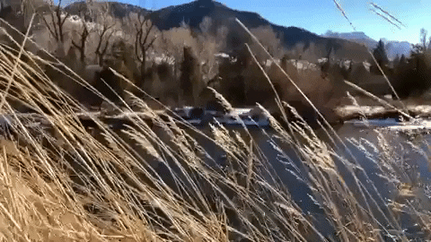
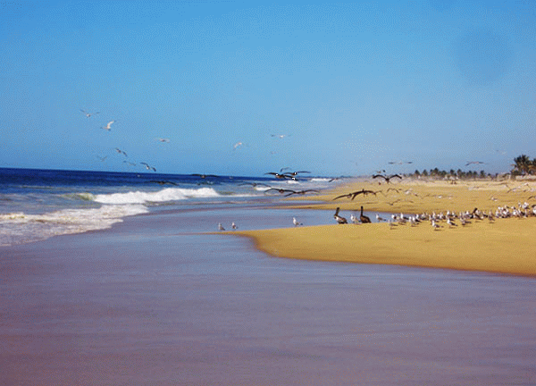
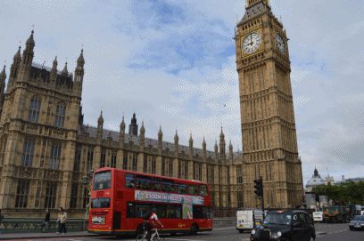

Mexico nos ofrece un mundo lleno de contrastes. Cuidades inmensas, selvas virgenes, volcanes, playas interminables, ciudades coloniales, paisajes diversos, vida silvestrey desiertos impresionantes entre muchas otras cosas mas.
Existe mucho por conocer.
 Hay ciertos escenarios seductores para vivir
aventuras en la montaña. Me gusta visitar las montañas,
ver los ríos, las cascadas, la flora y fauna silvestre -
pinos, cedros, encinos, los halcones que vuelan en el
cielo; oir las aves que cantan, correr atrás de algún
venado u otro animalito, respirar el aire fresco y dulce.
 Me gusta abandonar la rutina de la ciudad y vivir la aventura de conocer
México con sus hermosas playas doradas de arena que nos invitan
a descansar, a nadar, a hacer locuras imprevistas.
Me encanta ir a Acapulco, Cancún, Puerto Escondido o las playas de Huatulco
con mi novia y mis amigos.
 Las vacaciones pasadas me fui a Europa y al Reino Unido,
Visité muchas ciudades hermosgs e hicimos muchas fotos
digitales. Aqui le muestro mis fotos de Londres, una cludad
grande sobre el río Támesis. La zona historica de Londres
está sobre la orilla norte del río, donde tambien se encuentran
la mayoria de las atracciones turísticas: cabe destacar la Torre de
Londres, la plaza Trafalgar Square y del Parlarnento, la abadia de
el palacio de Buckingham o la Catedral de San Pablo.